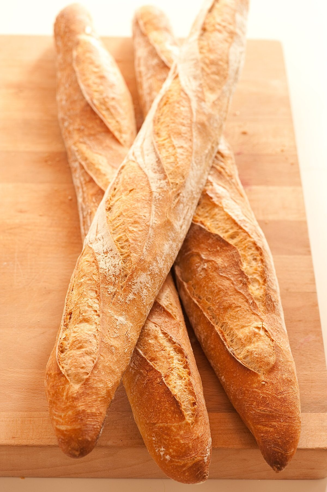
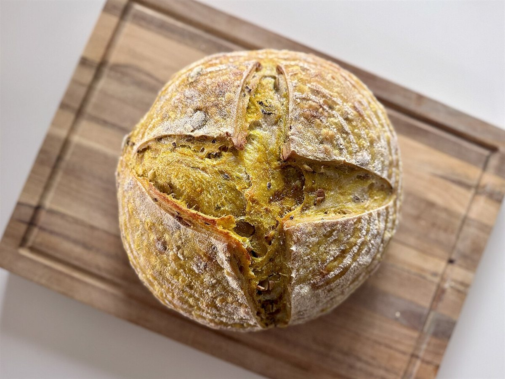
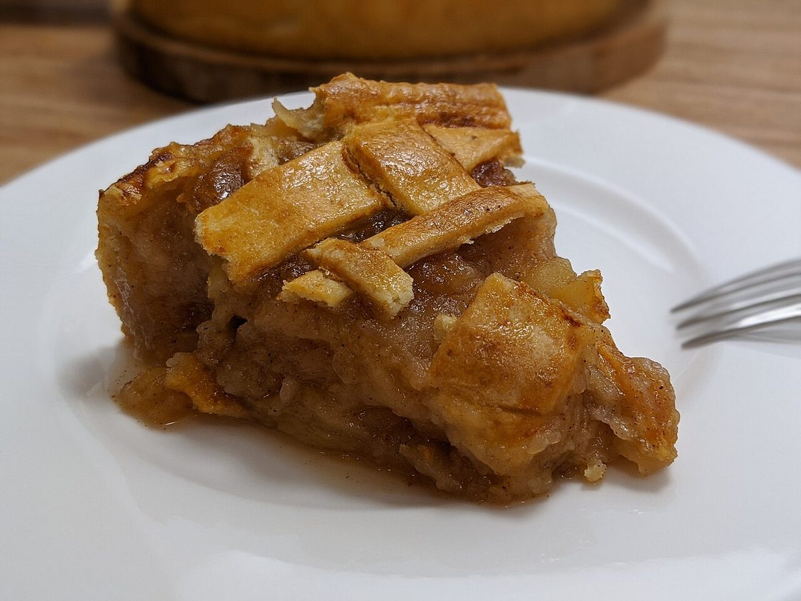

ABOUT
お店の想い
宜野湾市伊佐の住宅街にあるパン屋です。お店のInstagramでは、「人を笑顔にできるおいしいパン、また食べたくなるパンを目指し、心を込めて焼いています」と紹介されています。
国道58号線から一本入った静かな場所にあり、もっちりとした食感のパンは、甘みと塩味のバランスがよいと地元紙で紹介されました。
店名の由来・開業の経緯などは確認できていないため、ここでは触れていません。
人を笑顔にできる、
おいしいパン。
また食べたくなる、パン。
おいしいパン。
また食べたくなる、パン。
BREAD
パンのご紹介
紹介記事などで確認できたパンです。品ぞろえは日によって変わる場合があります。
写真(イメージ)
下の写真はフリー素材のイメージで、お店の実際の商品ではありません。







VOICE
口コミ(イメージ例)
以下は制作側が作成したイメージ例で、実在のお客様の声ではありません。
イメージ例
カレーパンを目当てに寄りました。袋を開けた瞬間の香りで、もう笑顔になります。
イメージ例
住宅街の中にあって少しわかりにくいけれど、見つけたときのうれしさも含めて好きなお店です。
イメージ例
甘いパンも惣菜パンも迷います。また食べたくなって、つい週末に足が向きます。